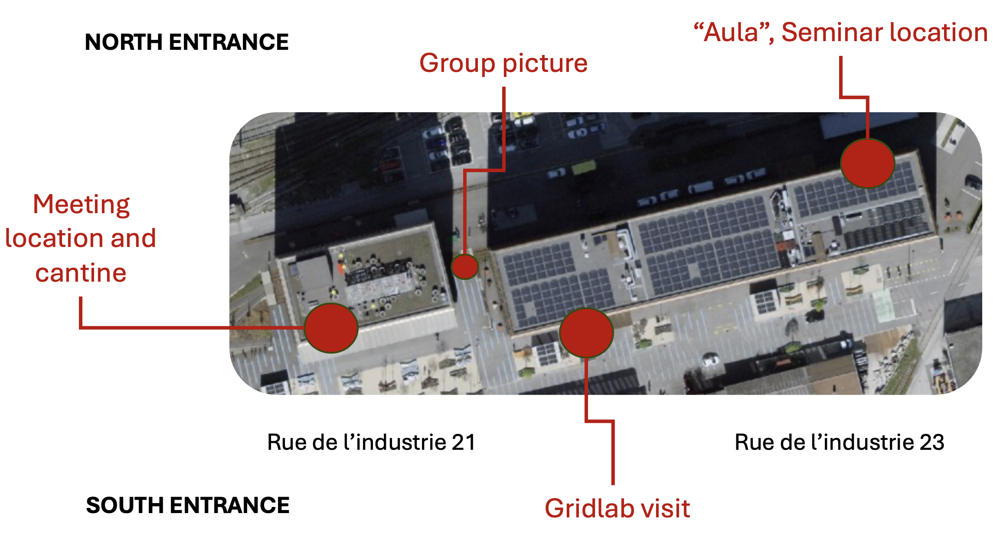

[STOR-HY] Third Periodical Meeting and General Assembly
Thursday, 2 October 2025 to Friday, 3 October 2025, Sion
Organizational details are listed here below.
Meeting venue
HES-SO Valais-Wallis
Energypolis campus
Rue de l'industrie 21
1950 Sion
Switzerland
Meeting room:
Building 21, 2nd floor, room 208.
Agenda
Thursday, 2 October 2025
| Time | Session |
|---|---|
| 08:30 – 09:15 | Welcome logistics (5 minutes) and WP1: Project Management (UPC) |
| 09:15 – 10:15 | WP2: Requirements of Future PSP (Coordinated by EDPN) |
| 10:15 – 10:30 | Coffee break |
| 10:30 – 10:45 | Welcome from the Director of the Institute of Energy and Environment of HES-SO Valais-Wallis |
| 10:45 – 11:45 | WP3: Modelling and CADS (Coordinated by UPC) |
| 11:45 – 12:45 | WP4: Dispatching and Control of PSP (Coordinated by HESSO) |
| 12:45 – 13:30 | Lunch break |
| 13:25 – 13:35 | Group picture |
| 13:40 – 14:30 | Coffee in the Gridlab and demonstration on inertia-less grids |
| 14:30 – 15:30 | WP5: Saltwater and Harsh Environments (Coordinated by SENER) |
| 15:30 – 16:30 | WP6: Demonstrator Activities and Updates (EDF, EDPP, FAEN-HUNOSA) |
| 16:45 – 19:00 | STORH-HY seminar: Link to program |
Friday, 3 October 2025
| Time | Session |
|---|---|
| 08:30 – 09:30 | WP7: Sustainability (UTWENTE) |
| 09:30 – 10:30 | WP8: Project Exploitation (VGBE) |
| 10:30 – 10:45 | Coffee break |
| 10:45 – 11:45 | WP9: Communication Activities (ZABALA) |
| 12:00 – 13:00 | 3rd General Assembly (Coordinated by UPC) |
Map

Hotel rooms
Option 1
Special tariffs for STOR-HY participants have been negotiated with the Hotel Castel in Sion on a first-come, first-served basis with conditions reported here below.
The hotel is located 1.2 km away from HES-SO Valais (approx. a 20-minute walk).
To book your room, please get in touch with info_at_hotelcastel_dot_ch and mention you join the event "HES-SO consortium".
📅 Dates:
- Arrival: Wednesday, 1 October 2025
- Departure: Friday, 3 October 2025 (or individual extension upon request)
🛏️ Rooms:
- 15 to 18 single rooms available
- Rate per night and per room: CHF 140, breakfast included
- Upgrade available for participants accompanied by a guest:
→ CHF 170 per night for 2 people, breakfast included
Option 2 (added on Aug 25)
Here another hotel in the proximity of the school.Getting in Sion
Convenient airports:- ✅ Geneva Airport (GVA), then direct train ~1h50 to Sion.
- ✅ Zurich Airport (ZRH), then train ~2h30 to Sion (via Bern, Lötschberg tunnel, Visp; 1 or 2 changes).